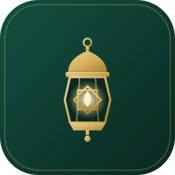

أنت دون اتصال
تعذّر تحميل هذه الصفحة لأنها لم تُحفظ على جهازك بعد، والشبكة غير متاحة الآن.
ما نزّلتَه أو فتحتَه سابقاً (المكتبة، القرآن المنزَّل، الأدعية، الأدوات) يعمل محلياً. جرّب فتح الصفحة الرئيسية.

تعذّر تحميل هذه الصفحة لأنها لم تُحفظ على جهازك بعد، والشبكة غير متاحة الآن.
ما نزّلتَه أو فتحتَه سابقاً (المكتبة، القرآن المنزَّل، الأدعية، الأدوات) يعمل محلياً. جرّب فتح الصفحة الرئيسية.